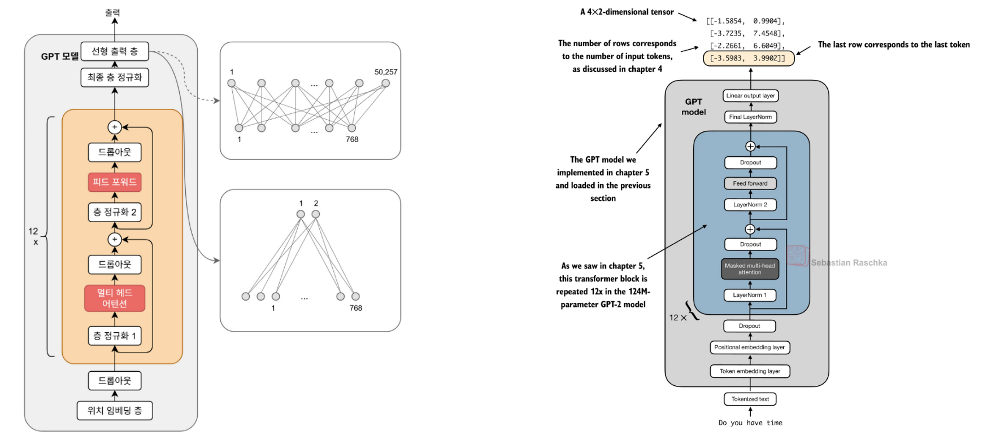
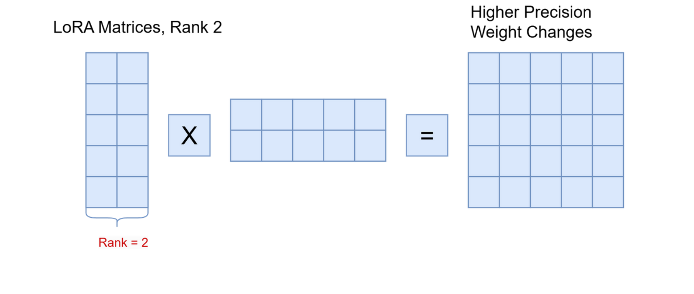
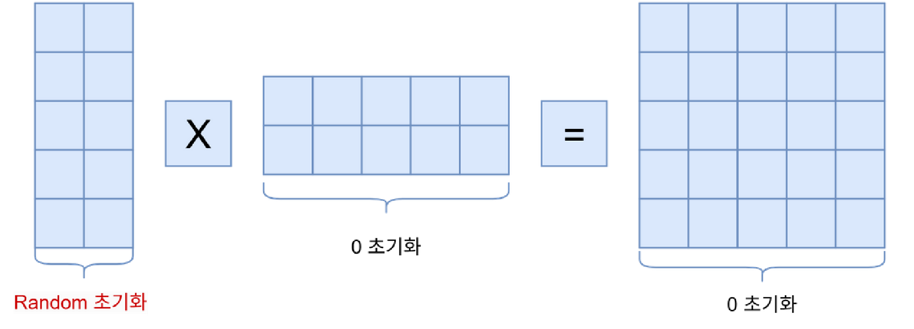
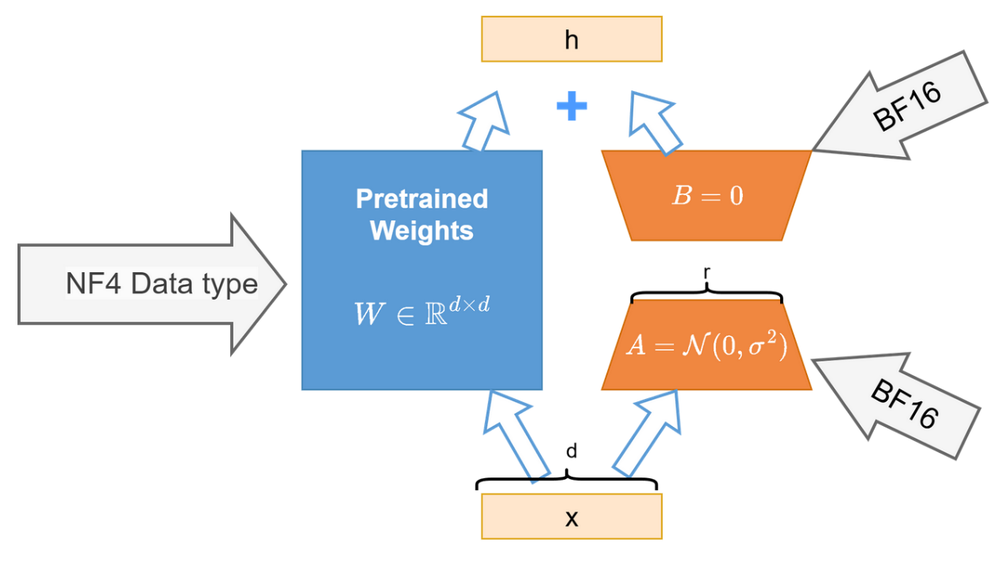

15. 미세튜닝, LoRA와 QLoRA
미세튜닝은 학습된 모델을 작업 데이터로 더 학습하는 과정이다. 문장 분류는 정답과 출력의 목적을 바꾸고, LoRA·QLoRA는 업데이트와 저장 방식을 바꾼다. 서로 다른 분류축이므로 함께 사용할 수 있다.
학습 목표는 분류 출력의 shape를 만들고, 저랭크 업데이트의 파라미터 수를 계산하며, 4-bit 저장과 계산 dtype을 구분하는 것이다. 1~3절은 기본, 양자화 세부는 4절 보충이다.
1. 문장당 라벨 하나를 예측하려면
next-token head는 [B,T,V]를 만들지만 K개 클래스 분류는 보통 문장마다 [B,K] logits와 [B] 라벨을 사용한다. Decoder-only 모델이라면 마지막 유효 토큰의 은닉 표현 [B,C]을 뽑고 [C,K] 분류 head를 적용할 수 있다. 마지막 토큰은 causal 구조 안에서 앞 문맥을 볼 수 있다. pooling 방식은 설계 선택이며 다른 방법도 가능하다.
B=2,T=5,C=8,K=3이면 은닉 [2,5,8]에서 문장 표현 [2,8], 분류 점수 [2,3]이 된다. 정답은 예컨대 [0,2]다. 짧은 문장을 오른쪽 padding했다면 [:, -1, :]은 padding 위치일 수 있다. 길이 정보나 attention mask로 마지막 유효 위치를 고른다. padding mask는 정보 참조를 제어하며, 토큰 정답을 제외하는 loss mask와 목적이 다르다. 실제 분류 학습에서는 기반 전체를 학습할지 일부만 학습할지도 정해야 한다.
2. LoRA는 작은 두 행렬로 수정분을 학습한다
설명용 열벡터 표기로 x가 [d_in,1], 기반 W가 [d_out,d_in]일 때,
W는 동결하고 A,B를 학습한다. r은 작은 병목 폭이며 BA는 W와 같은 shape를 갖지만 rank가 최대 r인 수정분이다. s는 수정분의 크기를 조절한다. 이 장의 A/B 이름은 이 식에 고정한다. 원문 그림은 왼쪽 랜덤 행렬과 오른쪽 0 행렬을 쓰는 곱셈 표기이므로 문자 이름보다 곱의 순서와 shape를 확인한다. 행벡터로 구현하면 식과 이름 배치가 달라질 수 있다.
작은 예에서 W는 4×6으로 24개 수다. r=1이면 A는 1×6, B는 4×1로 10개를 학습한다. r=2이면 20개, r=3이면 30개다. 따라서 r이 충분히 작아야 파라미터 수가 줄고, 모든 r에서 효율적인 것은 아니다. 일반식은 기반 d_out*d_in, LoRA r*(d_in+d_out)이다. 실제 전체 모델 절감률은 어떤 층에 적용했는지에 달린다. LoRA 원논문
실제 수로 두 경로 합치기
shape 예보다 더 작은 별도 손계산으로 d_in=2,d_out=2,r=1,s=1을 쓴다. W는 단위행렬, x=(1,2)ᵀ, A=(1,-1), B=(2,3)ᵀ로 놓는다. 먼저 기반 경로는 Wx=(1,2)ᵀ다. 수정 경로는 Ax=1×1-1×2=-1이고, B(Ax)=(-2,-3)ᵀ다. 둘을 더하면 y=(-1,-1)ᵀ다. x만 (2,1)ᵀ로 바꾸면 Ax=1, 수정분=(2,3)ᵀ, 최종 y=(4,4)ᵀ가 된다. 작은 rank는 입력에 무관한 상수를 더하는 것이 아니라 학습된 낮은 폭을 통과한 입력별 수정분을 만든다. B를 0으로 되돌리면 두 입력 모두 수정분이 0이 되어 기반 출력으로 돌아간다. 이 수치는 원문 측정치가 아닌 설명용 계산이다.
3. 초기 수정분은 0, 그래도 학습은 시작할 수 있다
위 식에서 A를 작은 랜덤값, B를 0으로 시작하면 BA=0이라 첫 출력은 기반 모델과 같다. 출력 손실의 미분을 G라고 쓸 때 수정분 관련 미분은 비례관계로 grad_B ∝ G(Ax)^T, grad_A ∝ B^T G x^T다. B=0이라 처음 grad_A는 0이지만 Ax가 0이 아니면 grad_B는 0이 아닐 수 있다. 첫 갱신 뒤 B가 달라지면 A도 학습될 수 있다. A와 B를 모두 0으로 놓으면 두 경로의 미분이 함께 막힌다.
둘 다 랜덤이면 첫 수정분이 0이 아니어서 사전학습 출력을 바꾸지만 사전학습 모델 전체가 랜덤 모델로 초기화되는 것은 아니다. 원문 188쪽의 표현을 이렇게 보완한다. rank를 키우면 표현 가능한 수정분의 범위와 비용이 늘지만 품질이 항상 좋아지지는 않는다.
4. QLoRA: 기반 저장과 adapter 학습을 분리한다
일반 LoRA도 큰 기반 가중치를 메모리에 올려야 한다. QLoRA는 기반 가중치를 저비트로 저장하고 동결한 채, 계산에 필요한 값을 높은 정밀도로 복원해 adapter로 기울기를 전달한다. 원논문은 NF4, 이중 양자화, paged optimizer를 함께 제안한다. 모든 텐서가 4-bit가 되는 것은 아니며 활성값·adapter·optimizer 상태·양자화 부가정보도 메모리를 사용한다. QLoRA 원논문
예컨대 10억 파라미터의 가중치 원소만 저장하면 16-bit는 2×10⁹바이트, 4-bit는 0.5×10⁹바이트다. 이는 이론적 원소 저장량이며 총 GPU 메모리 측정이 아니다. 원문 183쪽 ‘10B에 160GB’도 optimizer·gradient·dtype 등 가정을 모르면 보편적인 필요량으로 사용하지 않는다.
BF16은 부호 1, 지수 8, 가수부 7비트의 16비트 형식이다. FP32처럼 지수 필드가 8비트여서 표현 범위가 넓지만 가수 정밀도는 낮다. 정규화가 많다는 사실 자체가 모든 가중치의 범위를 보장하지는 않는다. ‘4-bit 저장 → 복원 → BF16 등으로 연산’의 구분을 기억하고 실제 계산 dtype은 구현 설정을 확인한다. 양자화 오차가 없어지는 것도 아니다.
| 조건 | 우선 검토할 방법 | 이유와 한계 |
|---|---|---|
| 충분한 자원, 작업 변화 큼 | full fine-tuning | 전체 가중치 변경 가능, gradient·optimizer 비용 큼 |
| 여러 작업 adapter 관리 | LoRA | 작은 작업별 수정분, rank·대상층 선택 필요 |
| 기반 가중치 저장이 병목 | QLoRA | 저비트 기반 저장, 양자화와 실행 지원 고려 |
어느 방식도 모든 데이터·평가에서 우월하다고 단정하지 않는다. 분류 또는 SFT 같은 학습 목표와 위 방법을 조합한다.
5. 이해 확인
- B=3,K=2인 문장 분류의 logits와 정답 shape는?
- d_in=8,d_out=6,r=2의 W와 adapter 파라미터 수는?
- 첫 B=0일 때 어느 경로가 먼저 학습될 수 있는가?
- 4-bit 기반을 쓰면 optimizer와 활성값도 4-bit라고 말할 수 있는가?
해설과 돌아갈 위치
[3,2],[3]. 1절의 문장당 정답을 확인한다.- 48과
2*(8+6)=28. adapter가 더 적다. 2절. - 이 장의 열벡터 표기에서 B. A로 가는 gradient는 B를 곱하므로 첫 단계 0이다. 3절.
- 아니다. 기반 저장, adapter/활성값 계산, optimizer 상태는 각각 다르다. 4절.
6. 분류 손실과 원문 수치 읽기
logits는 아직 정규화하지 않은 클래스 점수다. softmax는 p_k=exp(z_k)/Σ_j exp(z_j)로 합이 1인 확률을 만든다. argmax는 가장 큰 값의 위치 번호를 고른다. 손실 CE는 정답 클래스 c의 -ln(p_c)이며 이 장의 로그는 자연로그다. logits [2,0]이면 확률 [0.880797,0.119203], 정답 c=0이면 CE=0.126928이다. 클래스 번호 0=ham,1=spam은 데이터의 약속이지 모델이 자동으로 아는 뜻이 아니다. 학습 전 라벨 매핑을 고정한다.
원문과 정정: 181쪽의 두 logits [3.5983,-3.9902], [-3.9846,5.2940]를 검산하면 확률은 각각 약 [0.999494,0.000506], [0.000093,0.999907]이다. 원문 [0.99,0.01] 표시는 정확한 계산값이 아니다. 예측 번호 0·1은 같지만 예문 의미가 라벨과 직관적으로 어긋나므로 이 그림을 정확도 실험으로 해석하지 않는다.
원문 구조에서 무엇이 바뀌는지 먼저 확인하자. 출력 head의 50,257은 어휘 수, 2는 클래스 수다.

왼쪽 위의 넓은 어휘 출력을 아래의 두 출력으로 바꾸고, 오른쪽에서 마지막 유효 토큰 행을 읽는다. 실제 padding이 있다면 그림의 단순 마지막 행 대신 길이 정보를 적용한다. B는 배치 크기, T는 토큰 수, C는 은닉 폭, K는 클래스 수다. 이 단락의 B와 LoRA 행렬 B는 문맥이 다른 기호다.
7. 비용·rank·양자화의 조건을 검산하기
원문 해석: 183쪽의 10B·160GB는 FP16 가중치20GB+gradient20GB+추가 학습 상태120GB라는 예다. 예컨대 FP32 master weight와 Adam의 두 누적량을 각40GB로 두면 120GB를 설명할 수 있으나 모든 구현이 이 구성을 쓰지는 않는다. 활성값·임시 버퍼까지 포함한 실제 peak 메모리는 별도 측정해야 한다. 184쪽 PEFT의 작은 저장 용량·낮은 망각도 보장값이 아니다.
행렬곱의 가운데 폭이 무엇을 제한하는지 보자.

왼쪽 두 격자의 원소는 10+10=20, 결과는 25칸이다. 결과 shape가 같아도 rank≤2인 제약은 남는다. 원문의 precision은 여기서 표현 능력의 비유이며 저장 비트 수를 뜻하지 않는다. rank=3이면 30개가 되어 오히려 원래 25개보다 많다.
초기 출력 보존과 학습 가능성은 함께 확인해야 한다.

그림의 랜덤×0은 초기 수정분0을 나타낸다. 본문의 열벡터 표기는 ΔW=BA이며 A random/B=0이다. x=(1,2)ᵀ, A=(1,-1), B=0, W=I, 목표 t=0, L=½‖y-t‖²이면 grad_B=(-1,-2)ᵀ, grad_A=0이다. 학습률0.1로 B=(0.1,0.2)ᵀ가 되어 출력=(0.9,1.8)ᵀ, 손실은2.5에서2.025로 줄어든다. 이는 실제 학습 실험이 아닌 재현 가능한 손계산이다.
교육용 보충: 균등 4-bit 대표값을 q_k=-1+2k/15, k=0..15로 두면 0.5678은 q₁₂=0.6으로 근사되고 오차는0.0322다. 원문190쪽의 13은 1부터 세는 순번으로 읽어야 하며 0-based index는12다. NF4는 이 균등 코드북과 같지 않다. 정규분포를 고려한 비균등 대표값을 쓴다. scale은 블록 안 값의 범위를 코드북 범위에 연결하는 계수다. double quantization은 이 scale 등 양자화 상수도 양자화해서 부가 저장량을 줄이는 방법이다. paged optimizer는 메모리 사용 급증을 관리하는 장치이며 추가 비용을 없애는 마법은 아니다. QLoRA 원논문 3절
저장 경로와 계산 경로에 붙은 dtype 라벨을 분리해서 보자.

입력 x에서 출발해 W의 근사 복원값과 BF16 adapter를 계산하여 더한다. 처음 B=0이면 양자화된 기반과 같은 출력이지만 양자화 전 모델과 완전히 같다는 보장은 없다. 원문191쪽의 24GB GPU·30B 학습 가능 비교도 문맥길이·배치·활성값·구현 조건 없이 모든 장치에 적용하지 않는다.
8. 내부 활동과 다음 단계
분류 활동은 182쪽, LoRA 첫 갱신 활동은 194쪽에 입력과 예상 결과를 함께 제공한다. GPU 없이 손계산으로 수행할 수 있다. 원 노트북 전체 실행은 확인하지 않았다. 다음 16장에서는 출력 문장 중 어떤 토큰을 학습할지 정한다.
원문 페이지별 상세 해설
- 176쪽: 미세튜닝으로 학습 목적 바꾸기
- 177쪽: 프롬프트 분류와 분류 전용 출력
- 178쪽: 짧은 문장에 padding 붙이기
- 179쪽: 토큰 행렬과 문장 라벨 벡터
- 180쪽: 어휘 head에서 두 클래스 head로
- 181쪽: softmax와 argmax의 역할
- 182쪽: 분류 미세튜닝 작은 실습
- 183쪽: LoRA가 줄이는 비용과 표의 조건
- 184쪽: full fine-tuning과 PEFT 비교
- 185쪽: rank 2 행렬곱의 크기
- 186쪽: 기반 가중치에 수정분 더하기
- 187쪽: 동결 경로와 학습 경로
- 188쪽: 0 수정분과 살아 있는 gradient
- 189쪽: 양자화는 연속 값을 대표값으로 묶는다
- 190쪽: 16개 코드와 이중 양자화
- 191쪽: 24GB 비교 그림의 범위
- 192쪽: NF4 저장과 BF16 계산
- 193쪽: FP16·FP32·BF16 비트 배치
- 194쪽: LoRA 초기화와 첫 갱신 실습